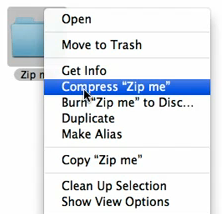

Making Zips
CHANGELOG: Empty
1 Rationale
For class assignments, one must frequently turn in an entire working directory of code which may have many files, sub-folders, or other elaborate structures. A Zip File is a convenient way to do this: it will condense the entire folder hierarchy into a single file and perform compression on it to decrease the size. This single file can then be uploaded/turned in and graders can "unzip" the file to create the entire directory setup.
This guide gives a few of the most common ways to create Zips.
2 Graphically On Linux
Most GUI desktops on Linux distributions have an "archive manager" program installed which can create zips by dragging an dropping.
In some cases, right-clicking on a folder may bring up a "Create Archive" context menu which makes this easy.
One can usually start the archive manager to do this as well. Below are detailed steps using the UMN's Vole installation.
Find the folder/directory you want to Zip
Do so in a graphical file browser.

Open the Archive Manager
It is usually present under the main menu buried under "Accessories" or "Utilities".

Drag the Folder onto the Archive Manager Program Window
This will prompt for whether you want to create a new archive (yes).

Select Zip Format
Next to the file name is a context menu of the many types of
archives. Select .zip.

Press Save
This should create the zip file with the .zip extension in the same
directory. You can close the Archive Manager program now.


3 Unix Command Line Zip Utility
Most Unix machines (Linux/Mac OSX) have the command line zip and
unzip utilities installed which can create and manipulate zip archives.
To zip a whole folder, navigate to the directory where the folder exists and use the command
zip zip-file-name -r directory-name
Below is terminal session of zipping up the first-program directory which
is done using the command
zip first-program.zip -r first-program
The subsequent commands verify that the zip was created and show its
contents (with the unzip -l first-program.zip command). To the right
is a picture of the visual view of the same directory which shows the
folder and highlights the zip file that was created from it.
# change to the correct directory/folder
> cd my-work
# list the contents of the folder
> ls
first-program/
# contains a folder named first-program to be zipped up
# Create the zip file first-program.zip from the folder
> zip -r first-program.zip first-program
adding: first-program/ (stored 0%)
adding: first-program/data-folder/ (stored 0%)
adding: first-program/data-folder/data2.dat (stored 0%)
adding: first-program/data-folder/data1.dat (stored 0%)
adding: first-program/assignment-notes.txt (stored 0%)
adding: first-program/hello.c (deflated 23%)
# show the entire contents of the first-program.zip file
> unzip -l first-program.zip
Archive: first-program.zip
Length Date Time Name
--------- ---------- ----- ----
0 2018-02-23 14:35 first-program/
0 2018-02-23 14:35 first-program/data-folder/
5 2018-02-23 14:35 first-program/data-folder/data2.dat
5 2018-02-23 14:35 first-program/data-folder/data1.dat
21 2018-02-23 14:35 first-program/assignment-notes.txt
157 2013-05-28 13:05 first-program/hello.c
--------- -------
188 6 files
4 Using Windows GUI
Windows 7, 8, 10 come with built-in support for creating and dealing with ZIP files. You can use the Windows GUI with to create an archive using the following steps.
- Find the folder containing your programming assignment
- Right click on the directory
- Pick Send To -> Compressed Folder (.zip)
You should now have a compressed version of your folder.


5 Using Mac OS X GUI
Mac OS X users should also be able to create a zip using the their GUI.
- Right click (or hold the control key and click) on a folder in Finder.
- From the context menu, select Compress "Folder name" (may be called "Create Archive of …" instead)
- A zip archive of your folder should appear alongside the original folder

The following link contains additional instructions and a video of this process: http://www.hacktrix.com/zip-file-folder-on-mac-os-x